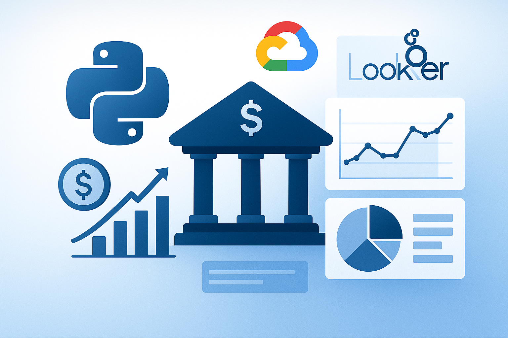

Visão Geral do Projeto
O Banking Analytics Dashboard é uma plataforma abrangente de análise de dados projetada para instituições financeiras obterem insights profundos sobre comportamento do cliente, padrões de transações, detecção de fraudes e performance de negócios. Construído com tecnologias modernas de nuvem, incluindo Google Cloud Platform (GCP) BigQuery e Looker Studio, esta solução demonstra capacidades avançadas de engenharia de dados e analytics.
Este projeto apresenta aplicações do mundo real de ciência de dados no setor bancário, apresentando dashboards interativos, analytics em tempo real e insights alimentados por machine learning que direcionam decisões de negócio e melhoram a experiência do cliente.
Principais Funcionalidades
Motor de Analytics Avançado
- Monitoramento e análise de transações em tempo real
- Segmentação de clientes e análise comportamental
- Detecção de fraudes com algoritmos de machine learning
- Analytics de performance de produtos
- Avaliação de risco e scoring de crédito
Dashboards Interativos
- Interface web alimentada por Streamlit
- Visualizações interativas com Plotly
- Monitoramento de KPIs em tempo real
- Intervalos de datas e filtros customizáveis
- Design responsivo para dispositivos móveis
Arquitetura Cloud-Native
- Google Cloud Platform integração
- BigQuery para data warehousing
- Looker Studio para business intelligence
- Infraestrutura escalável e segura
- Infrastructure as Code com Terraform
Pilha Tecnológica
| Componente | Tecnologia | Propósito |
|---|---|---|
| Frontend | Streamlit, Plotly | Interactive dashboard and visualizations |
| Backend | Python, FastAPI | Data processing and API services |
| Database | Google BigQuery | Data warehousing and analytics |
| BI Tool | Looker Studio | Business intelligence and reporting |
| ML | TensorFlow, scikit-learn | Fraud detection and predictive analytics |
| Infrastructure | Terraform, Docker | Infrastructure as Code and containerization |
| Data Processing | Apache Beam, Pandas | ETL and data transformation |
| Cloud Platform | Google Cloud Platform | Hosting and managed services |